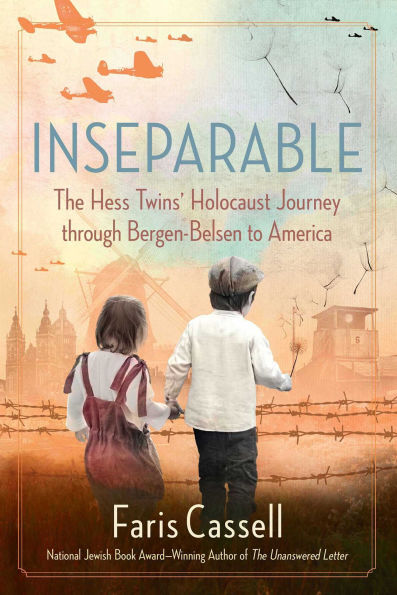
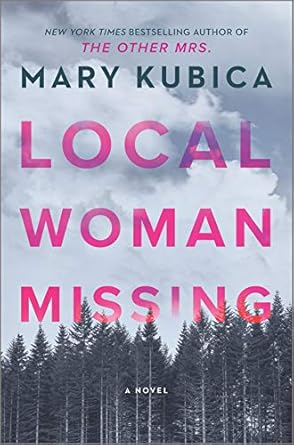
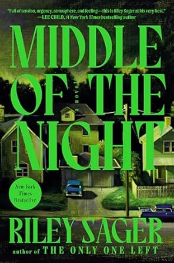

These are some of my favorite books that I have read this summer during my reading journey:
Holocaust Biographies
- 
Scientology Biographies
Thriller/Mystery Fiction
- 
- 
These are some of my favorite books that I have read this summer during my reading journey: